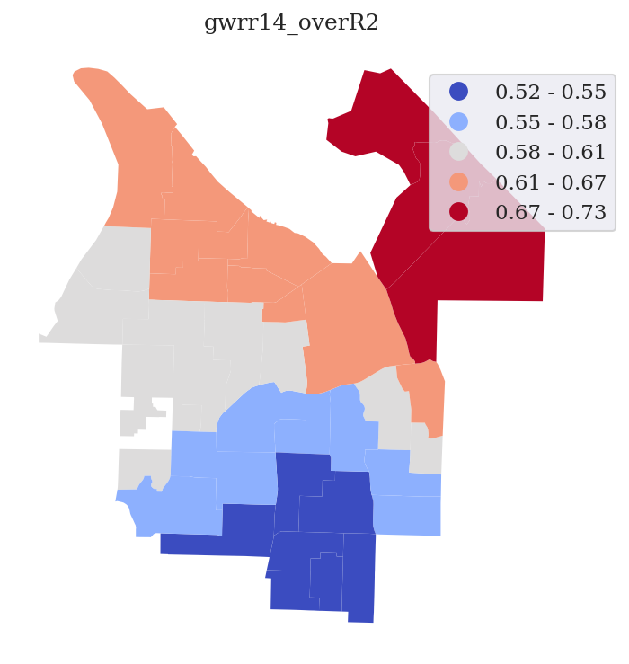
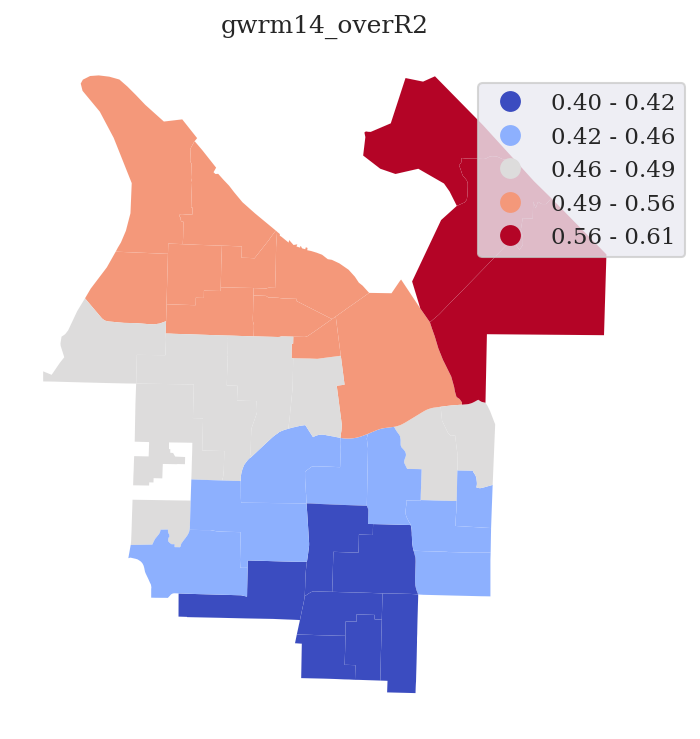
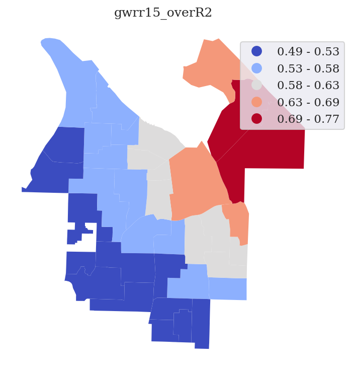
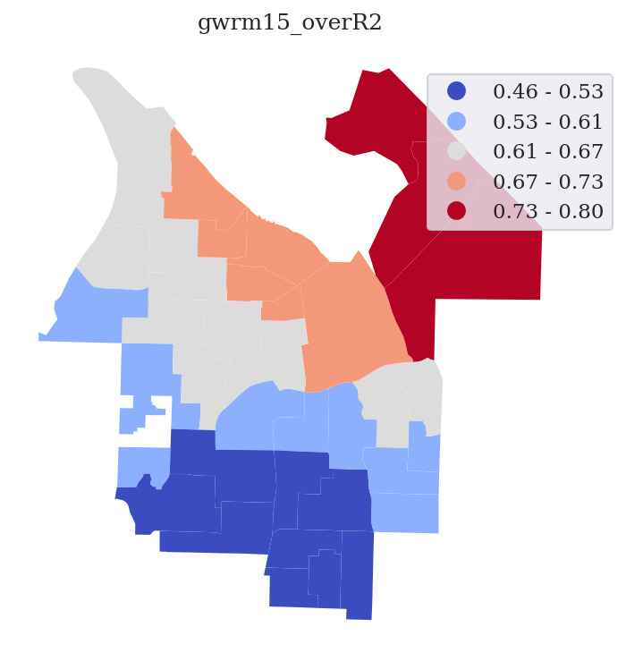
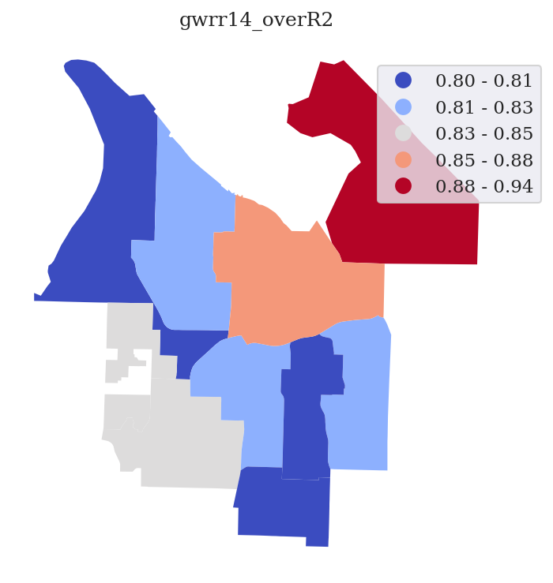
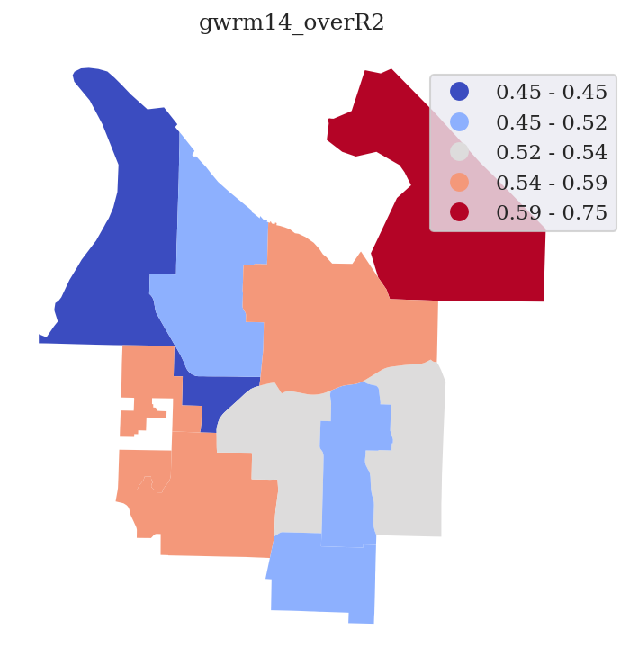
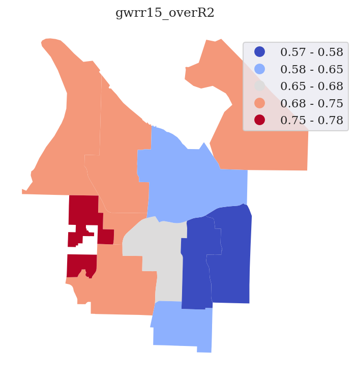
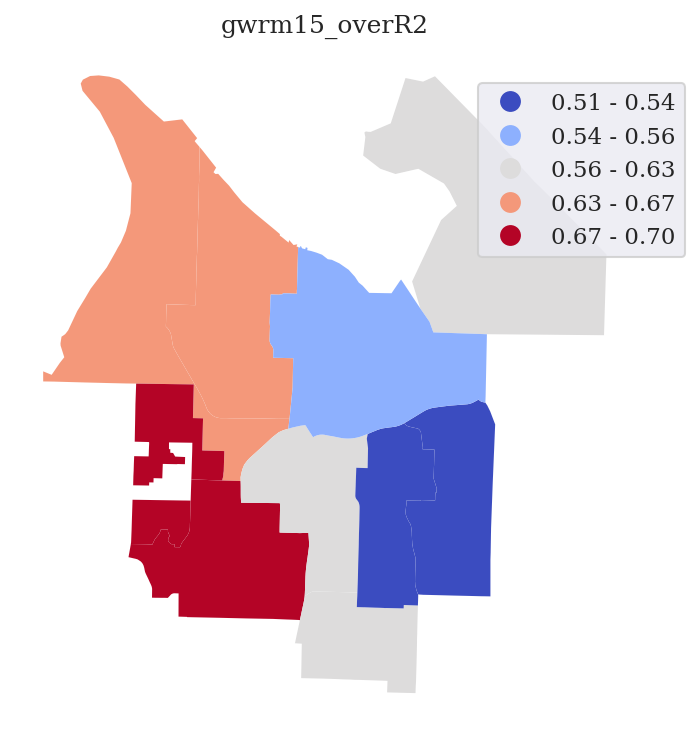

Capstone Progress
Environmental Racism and its Material Effects on Education in Tacoma Washington - Preliminary Outputs
Planned in the Fall and Winter, this project was carried out throughout Spring and Summer 2022. The purpose of this project was to apply current scientific thinking on the prediction of air pollution and the effects it can have on developing brains to the case of Tacoma, Washington - a postindustrial, auto-dependent city that depends heavily on the diesel-powered container ships that come into port for its economy.
Modeling Air Pollution in Tacoma
Using publicly available data and manually collected air pollution outcomes, this project has sought to predict the dispersion of air pollution throughout Tacoma using what's called a Land Use Regression - essentially, comparing measured pollution values to the locations of known pollution sources like highways and polluting factories as well as things that would tend to reduce air pollution like open, undeveloped land. Having done this, it is then possible to estimate the air pollution concentration of other regions of the city where those other variables are known based on the relationship the tool identified. This was done in Tacoma using a mix of air pollution measurements from a Plume Labs Flow II monitor and a collection of features like highways, arterial roads, railroad lines, facilities that report producing toxic emissions to the EPA, lakes and ponds, park land, and the height and slope of the land. Two primary attempts were made at this - due to a limited data sample and the need to move onto other parts of the project, neither is exactly ideal, but they serve to give a basic indication of what the situation may be like.
The first model initially looked good, particularly in how it predicted air pollution over the Port of Tacoma, but upon closer examination it had problems. In many places, this initial model predicted pollution values far lower or higher than what most nearby sample points where actual air pollution values were known were predicted, for example. As such, it was decided to consider the reasons it might be so far from what was observed, and work to correct whatever those problems were for the sake of a more realistic, relevant estimate to work with. What was identified as the likely cause were points collected from near the University of the Puget Sound campus, which had actually been undergoing heavy roadwork at the time.
The second model was produced by dropping all of the points collected from right near the UPS campus from consideration (this would have been for the best even if predictions were close to the actual measurements, because with the heavy roadwork underway and all of the roads closed to the public, the area was nothing like what it would normally be like, making the measurements useless for predicting what it's normally like there), then running XLUR - the tool that generated the models - again, with no changes to any other part of the procedure. The air pollution values over the port ended up lower than would be expected for an industrial area, but as very few children were revealed to live in the area, it was not regarded as a high priority. The result of this change in the model was that predicted values much more closely matched the typical observed ones in the areas where both were available.
Initial Pollution Model - Block Groups
Final Pollution Model - Block Groups
Tacoma Public School Grades
For the sake of figuring out how air pollution and academic scores might be related in Tacoma, it was necessary to pick a measure of academic scores. What was settled on in this case were the reported Adequate Yearly Progress scores of Tacoma Public Schools elementary and middle schools in math and reading. These data were collected under the No Child Left Behind act, and run from negative one hundred to zero for each combination of school, demographic, and subject, with a score of zero indicating full satisfaction of the state-level requirements for schol performance. These were downloaded for both 2014 and 2015, and tied to polygons depicting the area each elementary or middle school took in students from in 2016-17. The mismatch between the years is inevitable, because these polygons were not publicly available in a GIS compatible form prior to this project, to the author's knowledge, and are privately available only in their 2016-17 versions.
2014 Elementary School Reading
2014 Elementary School Mathematics
2015 Elementary School Reading
2015 Elementary School Mathematics
2014 Middle School Reading
2014 Middle School Math
2015 Middle School Reading
2015 Middle School Math
Drawing connections
Having created an estimate of the average pollution across the land area of each census block group in Tacoma in 2022, and having collected data on the math and reading performance of students in 2014 and 2015 (This year mismatch is less than ideal, but inevitable when working from only publicly available data.) it was then necessary to get the pollution values into the schools, along with some other data. This was necessary so that two statistical methods could be used to identify the relationship that seemed to exist between them.
The way this was done was to download data from the US Census Bureau describing the age of the population of each block group, and classify anyone in the 5-9 year old category as an elementary school student, and anyone from 10-14 as a middle school student. While there are edge cases and exceptions to these age categories in reality, working with the limited detail the census bureau provided, these were the closest approximations of grade level by block group. Other data that were downloaded included data on the median family income of a block group, the levels of education of adults in the area, and the careers people in the area worked in. These latter data were meant to predict the socioeconomic status - the combination of education, income, wealth, and social influence that roughly characterizes one's economic class - of the average child in an area by creating variables such as the average years of education of an adult in the area and the percent of people in the area working in manual labor compared to in the sciences. This was done because otherwise, some educational variation caused by a wealth gap might be mistaken for being caused by pollution. By multiplying things like the average pollution, income, education level, or percent working a given job type by the number of students of a given level estimated to be in a block group, and then adding up the number of children and (individually, for each other factor) multiplied values for those things in the block groups that overlapped each school's catchment area, it was possible to divide the sum of the multiplied values by the sum of the students to estimate a per-school average. This ensured that the predicted air pollution of a block group with no children in it would not substantially impact the overall score assigned to a school more than one with many children in it.
Ultimately, at this stage everything other than pollution and income were dropped as factors. Although scientific literature supported considering the other things, using them all in the two statistical 'regressions' applied for the analysis resulted in a number of problems with the output. The biggest of these problems was something called multicollinearity - where the values of two variables change so similarly to each-other across space that it becomes impossible to tell which one of them is actually related to changes in to the phenomena one is analyzing. Normally, this might be prevented by constructing an index of the data - multiple variables which have been normalized, or converted into a common scale, and collapsed into a single numerical value - but this generally requires some preexisting knowledge of the actual impactfulness of each variable in order to give it an appropriate value - knowledge which this study was intended to assist in creating, and so naturally lacked.
Two types of statistical regression were used when analyzing the relation between pollution, income, and grades in math and reading. The first is what's called Geographically Weighted Regression, or GWR. This style of regression is unusual, because rather than trying to write one equation to predict an outcome across the entire area, it breaks the study area down into small areas which work more similarly to each-other than to those outside, and creating an equation for each one of them. As a result, you can see how much the set of factors involved can explain the results at each individual area, which can help in diagnosing what other variables might be causing the results to change in places, among other things.
The second type of regression used is called ordinary least squares, a type of regression that considers the entire study area at once (is global) and writes just one equation for predicting the results. Although the ability to look at a particular area and try and diagnose the cause of the difference is lost, the equation this produces can be used more generally to try and predict outcomes in a similar location based on the conditions that exist.
To explain the meaning of the results these produced, a little bit of terminology needs to be explained. A regression model's 'r^2' value refers to the percentage of the variability of the data that can be predicted just based on the factors that are considered in the model. This is written as a decimal value - a score of 0.45 means, for example, that 45% of the variation is explained. The intercept refers to the base value that the predictors add or subtract from to arrive at the true value - it's a mix of the actual baseline value and what might be explained by other factors that weren't considered, but can't be explained by just those that were. The coefficient refers to the amount each unit of one of the predictors (one dollar of income, one 'point' of pollution, etc.) modifies that intercept by to arrive at the actual predicted score for the area in question - if a pollution score of 70 was paired with a coefficient of -0.3, that would mean that pollution seemed to explain 21 points of lost academic performance at a school, out of a 100 point scale. Finally, the p-value, written as a decimal, is the predicted percentage chance that the coefficient observed in the data for that variable is actually just the result of random chance rather than a real relationship. A p-value of 0.2 means, for example, that there's a 20% chance that the results can't be trusted. Normally one aims for something in the range of 0.05 or even as low as 0.01 in science, but because this study wasn't intended to definitively claim whether or not pollution is likely a cause of academic variability in Tacoma, but rather to indicate whether it seems like more, better research on the matter is imminently needed or not, and because the data used were less than ideal, the vastly higher 0.3 was set as the threshold for 'statistical significance' instead - as long as the p-value was mostly below a 30% chance of randomness, it was safe to say that more research was needed.
2014 Elementary School Reading GWR
OLS Results
Intercept: -31.3030
Pollution Coefficient: -0.2007
Pollution P-Value: 0.0064
Income Coefficient: 0.0003
Income P-Value: 0.0000
Model R^2: 0.5972 (0.2147 if only pollution is included)
2014 Elementary School Math GWR
OLS Results
Intercept: -34.8937
Pollution Coefficient: -0.3403
Pollution P-Value: 0.0528
Income Coefficient: 0.0004
Income P-Value: 0.0004
Model R^2: 0.4564 (0.2159 if only pollution is included)
2015 Elementary School Reading GWR
OLS Results
Intercept: -62.9583
Pollution Coefficient: -0.1849
Pollution P-Value: 0.2655
Income Coefficient: 0.0005
Income P-Value: 0.0000
Model R^2: 0.5461 (0.1721 if only pollution is included)
2015 Elementary School Math GWR
OLS Results
Intercept: -69.7821
Pollution Coefficient: -0.1293
Pollution P-Value: 0.4090
Income Coefficient: 0.0006
Income P-Value: 0.0000
Model R^2: 0.6116 (0.1566 if only pollution is included)
2014 Middle School Reading GWR
OLS Results
Intercept: -99.1597
Pollution Coefficient: 0.3245
Pollution P-Value: 0.2491
Income Coefficient: 0.0009
Income P-Value: 0.0038
Model R^2: 0.7381 (0.1854 if only pollution is included)
2014 Middle School Math GWR
OLS Results
Intercept: -120.9966
Pollution Coefficient: 0.4393
Pollution P-Value: 0.3661
Income Coefficient: 0.0010
Income P-Value: 0.0335
Model R^2: 0.4591 (0.0563 if only pollution is included)
2015 Middle School Reading GWR
OLS Results
Intercept: -103.8630
Pollution Coefficient: 0.2102
Pollution P-Value: 0.6034
Income Coefficient: 0.0009
Income P-Value: 0.0418
Model R^2: 0.5055 (0.0411 if only pollution is included)
2015 Middle School Math GWR
OLS Results
Intercept: -112.4504
Pollution Coefficient: 0.3140
Pollution P-Value: 0.4817
Income Coefficient: 0.0008
Income P-Value: 0.0774
Model R^2: 0.3198 (0.1851 if only pollution is included)
Revisions
Quite frankly, the results at elementary schools in 2014 seemed unrealistically strong for the data being used, even if they were also mismatched from the other years and from middle schools, so a different approach was adopted for estimating socioeconomic status. This was based on the work of scientists by the surnames of Mullen, Grineski, Collins, and Mendoza (2020), who analyzed a similar question in the Great Salt Lake area of Utah. These researchers predicted socioeconomic status not based on block group income, but rather based on the school's eligibility for Title I relief funds and the percentage of students receiving free or reduced lunch - which acted as measurements of the poverty rate among the students - as well as the percentage of the students who were African American/Black, Latinx, Native American or Alaskan Native, or Pacific Islander or Asian - data acquired from the National Center for Education Statistics. These ethnic groups were identified by the authors as predictors of levels of socioeconomic disadvantage due to their overall demographic socieoconomic tendencies.
Similar data were here downloaded from the same source for the years of 2013-14 and 2014-15, the years under consideration, save that Asian students were not considered. The reason for this is that according to Yip et al (2021), Asian Americans are too socioeconomically uneven in status among themselves to reasonably be used as one group for statistical purposes - the most socioeconomically inequal census category, in fact. Because Mullen et al (2020) did not explain how they converted these scores at the school level into their index of socioeconomic status, a simplified method was used here. After all the data were attached to each school, they were sorted into five classes from lowest to highest based on an approach called Jenks natural breaks, which looks for chunks of the data which are more similar to each-other than to any data outside of themselves, and ranked 1-5 based on that, save for Title I Eligibility, which was a yes or no value rated as worth five or zero points. More points represented a school predicted to have a greater level of disadvantage in its student body - less socioeconomic status, in other words. Other variations on this were considered, like weighing Title I and free and reduced lunches higher than the ethnic factors, but what ultimately came out strongest was the version which weighted each factor equally.
2014 Elementary School Reading with Disadvantage Index
Intercept: 12.4274
Pollution Coefficient: -0.2001
Pollution P-Value: 0.0640
Income Coefficient: -1.2072
Income P-Value: 0.0000
Model R^2: 0.6079
2014 Elementary School Math with Disadvantage Index
Intercept: 14.1785
Pollution Coefficient: -0.3288
Pollution P-Value: 0.0538
Income Coefficient: -1.3953
Income P-Value: 0.0001
Model R^2: 0.4863
2015 Elementary School Reading with Disadvantage Index
Intercept: 4.0579
Pollution Coefficient: -0.1576
Pollution P-Value: 0.2580
Income Coefficient: -1.9292
Income P-Value: 0.0000
Model R^2: 0.6730
2015 Elementary School Math with Disadvantage Index
Intercept: 2.9107
Pollution Coefficient: -0.1630
Pollution P-Value: 0.3020
Income Coefficient: -1.8603
Income P-Value: 0.0000
Model R^2: 0.5977
2014 Middle School Reading with Disadvantage Index
Intercept: -4.4047
Pollution Coefficient: 0.2169
Pollution P-Value: 0.3964
Income Coefficient: -1.7278
Income P-Value: 0.0039
Model R^2: 0.7365
2014 Middle School Math with Disadvantage Index
Intercept: -16.9522
Pollution Coefficient: 0.3442
Pollution P-Value: 0.4287
Income Coefficient: -1.9523
Income P-Value: 0.0269
Model R^2: 0.4890
2015 Middle School Reading with Disadvantage Index
Intercept: -13.9661
Pollution Coefficient: 0.0226
Pollution P-Value: 0.9243
Income Coefficient: -1.5530
Income P-Value: 0.0050
Model R^2: 0.7184
2015 Middle School Math with Disadvantage Index
Intercept: -30.5294
Pollution Coefficient: 0.1764
Pollution P-Value: 0.5095
Income Coefficient: -1.5034
Income P-Value: 0.0096
Model R^2: 0.6047
Interactive Map - Markers Represent School Locations. Click for Detailed Statistics
-

Least Pollution -

Little Pollution -

Some Pollution -

Notable Pollution -

High Pollution -

Highest Pollution -
School Cachement Zone
Discussion
This change in methodology brought up the lowest pollution P-values and brought down the highest ones at the elementary level, making the results slightly more trustworthy while also indicating a greater chance that it was worth doing more research overall. This later research should probably feature data on student performance and characteristics collected at the level of a school itself, with cooperation of the school itself as well as community organizations. Most importantly, a better pollution model should be produced by using a set of sensors which can be dispersed through the study area long term and used to create averages, and actual traffic volumes along the roads should be gathered to better predict pollution from cars. This expanded study would command a team, an actual budget, and a longer time period for working. It would also be important to investigate just why elementary and middle schools have such different results here - where the elementary schools seem to broadly fit within the range of statistical significance, but the middle schools have the opposite apparent relationship and very much do not seem statistically significant.
Air pollution does, at the elementary school level, look relatively impactful when viewed from this perspective. Though varying based on year and topic, between ten and thirty points of variation are explained between the most and least polluted schools, on a 100 point scale, when one considers the (flawed) estimate of pollution used as a factor predicting outcomes. Some of the yearly variations observed may, it should be noted, simply be due to different families being surveyed on those consecutive years, rather than real changes in the child populations of areas.
At the middle school level, the effect is seemingly quite the opposite - or rather, based on the p-values, even that effect is probably nonexistent. It's quite possible that the predicted middle school populations for both years were simply wildly off, and so the predicted pollution for each year was similarly off. Alternatively, there could be a problem with the smaller number of middle schools impacting the statistics, or some unconsidered variable that is necessary at the middle school level. There could even be a problem where the effects of pollution at the middle school level are actually less than at the elementary school level.
It may also be the case that the metric of average pollution used here loses something - it is possible that each 'point' of pollution may be more or less impactful if the overall level is higher than when it is lower, or vice versa, and that a non-linear equation based on a different type of regression, or the tracking of students based on their categorization as low, medium, high, or very high in exposure might be desirable.
Originally, it was hoped that this study would also analyze variation in pollution between demographic groups based on their respective predicted pollution exposure as well, but this had to be dropped early on because most groups seemed not to have their socioeconomic characteristics or pollution exposure accurately predicted by calculating based off of the ethnic demographics of block groups and modifying the number of predicted number of school children of each ethnicity, before comparing to the recorded scores for that ethnic category in the grade data. As such, that dimension of the project was dropped long before the disadvantage index was switched to - although the code written for the project still has the complexity needed to account for it. That said, it is the hope of the author that a future project will be able to properly account for this factor and any role it may have in interethnic achievement gaps.
References
Mullen, C., Grineski, S., Collins, T., & Mendoza, D. (2020). Effects of PM2.5 on Third Grade Students’ Proficiency in Math and English Language Arts. International Journal of Environmental Research and Public Health, 17. https://doi.org/10.3390/ijerph17186931.